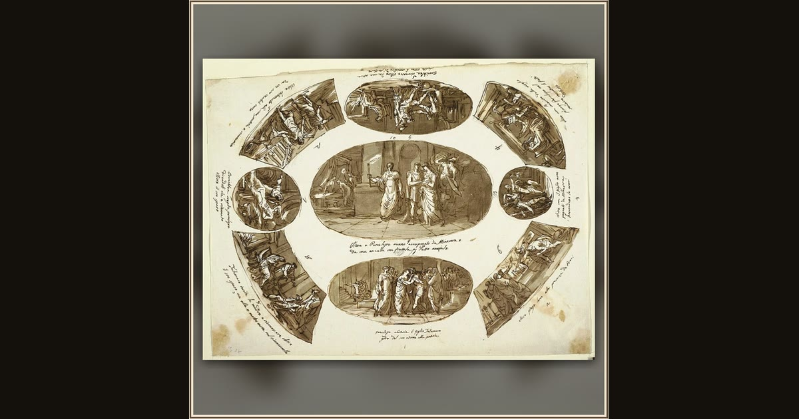

The Return of Ulysses to Ithaca
Felice Giani · 1802–1805 · Cooper Hewitt, Smithsonian Design Museum · New York, USA
Felice Giani sketches the happy homecoming he later painted on a palace wall: Ulysses stepping ashore on Ithaca after twenty years away. Explore its place in Book XIII of the Odyssey.